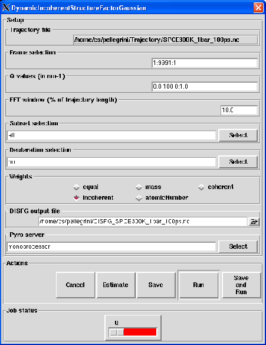

Next: Output
Up: Dynamic Incoherent Structure Factor
Previous: Theory and implementation
Contents
Parameters
Pressing the Dynamic Incoherent Structure Factor (Gaussian Approximation) button will pop up the dialog shown on
figure 4.54
Figure 4.54:
The dialog from where the DISFG analysis will be set up and run.
|

|
The following input fields controls the parameters for the Dynamic Incoherent Structure Factor using an Gaussian approximation (DISFG) analysis:
- Trajectory file
Format: string
Default: traj_file where traj_file is the name of the loaded trajectory
Description: the value of this widget can not be changed. It just recalls for information purpose the name
of the trajectory file loaded for the analysis.
- Frame selection
Format: string
Default: 1:traj_length:1 where traj_length is the number of frames of the trajectory.
Description: this widget allows to select the trajectory frames that will be used for the analysis. This must
be a string of the form:
first:last:step
where first is an integer specifying the first frame number to consider, last is an integer specifying the last
frame number to consider and step is an integer specifying the step number between two frames.
For example,
- 2:10:3 will select the frames 2, 5 and 8.
- 1:5:1 will select the frames 1, 2, 3, 4 and 5.
- Q values (in nm-1)
Format: string
Default: 0:100:1.
Description: this widget allows to select the modulii of the q-vectors. This must
be a string of the form:

In this way, the intermediate scattering function will be calculated for discrete q defined as
 where
where  is the radius of the smallest q-shell,
is the radius of the smallest q-shell,  is the
distance between two consecutive q-shells and with m running from 0 to
is the
distance between two consecutive q-shells and with m running from 0 to  where is the
number of selected q-shells defined as
where is the
number of selected q-shells defined as
 where
where  is the
radius of the biggest q-shell.
is the
radius of the biggest q-shell.
For example,
- 0:10:1 will generate q-shells of radii 0, 1, 2, 3, 4, 5, 6, 7, 8, 9, 10.
- 3:12:2 will generate q-shells of radii 3, 5, 7, 9, 11.
- FFT window
Format: float in [0.0,100.0]
Default: 10.0
Description: this widget allows to define the width in percentage of the trajectory length of the Gaussian
function to be used in the smoothing procedure for the calculation of the coherent structure factor out of the intermediate
scattering function. See Appendix A for more details.
- Subset selection
Format: subset selection string
Default: all
Description: this widget allows the selection of a subset of the system for the analysis.
See Section 4.2.2.1 for more details.
- Deuteration selection
Format: deuteration selection string
Default: no
Description: this widget allows the selection of a subset hydrogen atoms that will take the atomic parameters
of deuterium. See Section 4.2.2.2 for more details.
- Weights
Format: string equal to equal, mass, coherent, incoherent or atomicNumber
Default: incoherent
Description: this widget allows the selection of the weighting scheme to apply on each atomic contribution
to the DISFG. See Section 4.2.1 for more details.
- DISFG output file
Format: string
Default: DISFG_traj_file.nc where traj_file.nc is the name of the input trajectory
Description: this widget allows to enter the name of the NetCDF output file of the DISFG analysis. A CDL
version of the NetCDF output file is also automatically created with DISFG_traj_file.cdl name.
Next: Output
Up: Dynamic Incoherent Structure Factor
Previous: Theory and implementation
Contents
pellegrini eric
2009-10-06